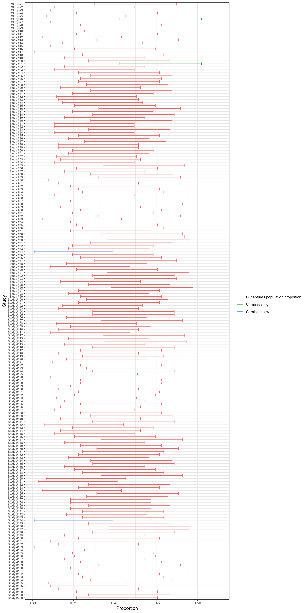

Chapter 5 Confidence Intervals
5.1 Review
Remember, we can use the numbered-ticket model to understand simple random samples from a large population.
From a couple of weeks ago, we learned the following:
- The numbered-ticket model says: Fill a box with \(k\) tickets numbered with \(t_1\), \(t_2\), \(t_3\), …, \(t_k\), draw \(N\) times with replacement from the box, and record the average-of-the-draws. The NTM is a particularly useful chance process to understand well, because we can choose the number of tickets, the numbers on those tickets, and the number of draws to make it “like” many other chance processes, especially sample surveys!
- The expected value is the long-run average of the average-of-the-draws. It’s equal to the average of the tickets in the box.
- The standard error (SE) is the long-run SD of the average-of-the-draws. It’s equal to \((\text{SD of the tickets in the box})/\sqrt{({\text{number of draws}})}\).
- If you have a large number of draws, then the long-run histogram of the average-of-the-draws follows the normal curve. We convert to standard units or z-scores using the expected value in place of the average and the SE in place of the SD. We can use this long-run histogram to compute the chance that the average-of-the-draws will fall into particular ranges.
- When working with a 0-1 box (i.e., a box with only 0s and 1s), it’s helpful to remember two tricks: (1) the average of the tickets in the box equals the proportion of tickets that are 1s and (2) the SD of the tickets in the box equals \(\sqrt{(\text{avg. of tickets in the box}) \times (1 - \text{avg. of the tickets in the box})}\).
Exercise 5.1 250 million adults are living in the US. 100 million “approve” of the job Donald Trump is doing as president, 140 million “disapprove,” and 10 million “aren’t sure.” Suppose I sample 400 of these adults and compute the proportion of people that approve.
About 95% of the time, the proportion of the sample that approves will be between _________ and _________. (Round to three decimal places.)
If you need a more thorough review of these ideas, see Chapter 3 and especially Exercise 3.21.
Hint
Choose an NTM that “is like” this chance process.Solution
See Exercise 3.21.5.2 The Motivating Question
Motivating Question: I randomly sample 400 adults living in the US and 184 of those approve of the job Donald Trump is doing as president. Based on this simple random sample, what can I say about the entire population of adults living in the US?
We’ve been using the numbered-ticket model to study questions much like this–finding the expected values, standard error, etc. Exercises 5.1 and 3.21 seem similar to this question. But the motivating question for this chapter is different in an important way: it’s backward.
In Exercises 5.1 and 3.21, we reasoned forward from the population to the sample. Given the population, we used the numbered-ticket model to describe what the random samples would look like.
In the motivating question above, I give you the sample and ask you what the population looks like.
In short, we need to take the logic of Chapter 3 and reverse it.
5.3 Reversing the Logic
We start with this statement that we developed in Chapter 3:
The average-of-the-draws will be about the expected value, give or take an SE or so.
We also have this variation:
The average-of-the-draws will be within two SEs of the expected value about 95% of the time.
We know these are true, so let’s modify them in ways that leave them true, but make them more applicable.
5.3.1 Replace NTM Terms with Sample Survey Terms
First, we already know that, because of the indicator trick, the average-of-the-draws in the NTM corresponds to the sample proportion in sample surveys. The average-of-the-draws is just the proportion of 1s drawn, and it’s just like the proportion of approvers in the sample survey.
Second, we already know that the expected value is the population proportion.
- Because we’re interested in a proportion, we use a 0-1 box and let the 1s represent the items that count (e.g., approvers).
- The expected value is simply the proportion of 1s in the box. Because we chose the proportion of 1s in the box to match the proportion of 1s in the population, the expected value is the proportion of 1s in the population.
See Exercise 3.14 if you need a refresher.
We can rewrite the two statements above replacing the phrase “average-of-the-draws” with “sample proportion” and the phrase “expected value” with “population proportion”
The sample proportion will be about the population proportion, give or take an SE or so.
The sample proportion will be within two SEs of the population proportion about 95% of the time.
5.3.2 The Symmetry of Distance
Imagine you are playing golf and figure out that you are 100 yards from the hole. How far is the hole from you? 100 yards.
It works the same for the sample proportion and population proportion. If the sample proportion is, say, 1.5 SEs, away from the population proportion, then the population proportion is 1.5 SEs away from the sample proportion.
This is because distance is symmetric. If the sample proportion is “close” to the population proportion, then the population proportion cannot be “far” from the sample proportion. They are both “close” to each other or not. Indeed, they must be the same distance apart.
Since both statements we’re interested in address the distance between the sample proportion and the population proportion, we can just switch their positions.
The population proportion will be about the sample proportion, give or take an SE or so.
The population proportion will be within two SEs of the sample proportion about 95% of the time.
5.3.3 Tense
Lastly, we need to address the tense of the statement.
When we started, we wanted to predict a future sample (or samples) based on a population that exists in the present. Now, we want to learn about a population that exists in the present based on a sample that we already have. So let’s switch from the future tense “will be” to the present tense. “is.”
The population proportion is about the sample proportion, give or take an SE or so.
The population proportion is within two SEs of the sample proportion about 95% of the time.
Exercise 5.2 Start with the statement: “The average-of-the-draws will be within two SEs of the expected value about 95% of the time.”
Get to the statement: “The population proportion is within two SEs of the sample proportion about 95% of the time.”
Explain each of the following steps using your own language:
- Go from the language of the numbered-ticket model (e.g., “average-of-the-draws”, “expected value”) to the language of sample surveys (e.g., “sample” and “population”).
- Use the symmetry of distance.
- Change the tense.
5.4 Using the Logic
Now we have two powerful statements that allow us to reason “backward” (actually the only direction we ever really cared about) from the sample to the population.
The population proportion is about the sample proportion, give or take an SE or so.
The population proportion is within two SEs of the sample proportion about 95% of the time.
We already know that the population proportion will be “close” to the sample proportion. But how close? These two statements allow us to say precisely–we just need to compute the SE…
5.4.1 A Big Problem
Remember that when we represent the sample survey as an NTM, then
\(\text{SE} = \dfrac{\text{SD of tickets in the box}}{\sqrt{\text{number of draws}}}\).
Remembering that we’re dealing with a 0-1 box (because this is a proportion), then
\(\text{SE} = \dfrac{\sqrt{\text{avg. of tickets in the box} \times (1 - \text{avg. of tickets in the box})}}{\sqrt{\text{number of draws}}}\).
Now let’s convert the language from that of an NTM to that of a sample survey. First, the average of the tickets in the box is simply the population proportion (that’s how we chose the number of 0s and 1s for the box).
Second, we might call the “number of draws” the “sample size.” Remember that the sample survey and the NTM are the same chance process (if we chose the correct NTM), so we’re not changing anything—these different words express the same ideas.
\(\text{SE} = \dfrac{\sqrt{\text{population proportion} \times (1 - \text{population proportion})}}{\sqrt{\text{sample size}}}\).
All we have to do is calculate this.
Do you see the problem?
There’s a big problem.
We don’t know the population proportion. And our ignorance is fundamental—it’s the whole reason we’re doing the sample survey.
To use the two statements, we need to know the SE. To know the SE, we need to know the population proportion. We’re stuck.
5.4.2 A Solution
We don’t know the population proportion—I readily and fully admit that. But we’re backed into a corner. If I forced you to guess, what would you choose? Using the best information you have, what would you guess the population proportion to be?
Well, our statement tells us that the “population proportion is about the sample proportion.” Can we just “plug-in” the sample proportion for the population proportion? Would that work in a pinch?
It turns out that using the sample proportion instead of the population proportion works quite well. Methodologists sometimes refer to this approach as the “plug-in principle.” It turns out that this estimated SE is approximately the same as the actual SE.
Notice now that we have two different SEs: the actual (that we can only know if we know the population proportion) and the estimated (that we use as a best-guess of the actual). We can indicate the estimated SE with a hat or refer to it as the “estimated SE.” (In practice, authors don’t do a good job of distinguishing between the actual and estimated SE. Usually, they are referring to the estimate, but you need to rely on context if the difference is important.)
\(\text{estimated SE} = \hat{\text{SE}} = \dfrac{\sqrt{\text{sample proportion} \times (1 - \text{sample proportion})}}{\sqrt{\text{sample size}}}\).
It’s not immediately clear, though, how well the estimated SE will work. Is it a crude approximation? Or is it almost exact?
Without going into the details, I’ll just state the important conclusion: except for extremely small sample sizes or extremely large or small proportions, it works very well. If your sample has four people, it won’t work well. If you’re estimating the proportion of adults that make more than $1 million per year with a sample of 1,000 people, it won’t work well.
But for most sample surveys, the approximation works well.
Exercise 5.3 Suppose I sampled 64 respondents and obtained a sample proportion of 0.297. Estimate the SE for the sample proportion. Round to three decimal places.
Solution
estimated SE = sqrt(sample proportion x (1 - sample proportion))/sqrt(sample size)
estimated SE = sqrt(0.297 x 0.703)/sqrt(64)
estimated SE = sqrt(0.209)/8
estimated SE = 0.457/8
estimated SE = 0.057
Exercise 5.4 Suppose I sampled N respondents and obtained a sample proportion of p. Estimate the SE for the following values of N and p.
| N | p | Estimated SE |
|---|---|---|
| 100 | 0.5 | |
| 25 | 0.3 | |
| 1000 | 0.2 | |
| 387 | 0.345 |
Solution
See Exercise 5.3 for the process.
| N | p | Estimated SE |
|---|---|---|
| 100 | 0.5 | 0.05 |
| 25 | 0.3 | 0.092 |
| 1000 | 0.2 | 0.013 |
| 387 | 0.345 | 0.024 |
Exercise 5.5 Suppose I sampled 64 respondents and 19 respondents had a quality of interest. Estimate the SE for the proportion of the respondents with the quality of interest. Round to three decimal places.
Solution
Begin by finding the sample proportion, which is 19/64 = 0.297. After this, the Exercise is just like Exercise 5.3.
Exercise 5.6 Suppose I sampled N respondents and k respondents had a quality of interest. Estimate the SE for the proportion of the respondents with the quality of interest for the following values of N and k.
| N | k | Estimated SE |
|---|---|---|
| 100 | 50 | |
| 25 | 16 | |
| 1000 | 750 | |
| 387 | 203 |
Solution
Begin by finding the sample proportion. After this, this Exercise is just like Exercise 5.3.
| N | k | p | Estimated SE |
|---|---|---|---|
| 100 | 50 | 0.5 | 0.05 |
| 25 | 16 | 0.64 | 0.096 |
| 1000 | 750 | 0.75 | 0.014 |
| 387 | 203 | 0.525 | 0.025 |
Exercise 5.7 Imagine tossing a coin 25 times and computing the proportion of heads. What’s the expected value? What’s the (actual) SE?
Now actually toss a coin 25 times and use the proportion of heads that you obtain to estimate the SE. Is the estimated SE close to the actual SE?
Solution
Tossing a coin 25 times and computing the proportion of heads is like…
Drawing 25 times with replacement from a box with a single ticket numbered with 1 and a single ticket numbered with 0 and averaging the draws.
expected value = 0.5 (i.e., the proportion of 1s in the box)
SE = (SD of tickets in the box)/sqrt(number of draws) = sqrt(0.5 x 0.5)/sqrt(25) = 0.5/5 = 0.1
The actual SE is 0.5.
I tossed a coin 25 times and I got 10 heads. That’s a sample proportion of 10/25 = 0.4. The estimated SE is sqrt(0.4 x (1 - 0.4))/sqrt(25) = 0.4898979/5 = 0.09797958 (or 0.10 after rounding).
The estimated and actual SEs are very close.
5.5 Confidence Intervals
Consider the second statement of interest:
The population proportion is within two SEs of the sample proportion about 95% of the time.
That gives us an interval:
\(\text{95% confidence interval} = \text{sample proportion} \pm 2 \times \hat{\text{SE}}\).
That is, we start at the sample proportion and hop 2 SE-hats to the left and 2 SE-hats to the right.
This interval will “cover” or “capture” the population proportion 95% of the time.
We can write a confidence interval as “[0.4, 0.6]” or “0.5 +/- 0.1” (read as “0.5 plus-or-minus 0.1”).
Exercise 5.8 This continues Exercise 5.4.Suppose I sampled N respondents and obtained a sample proportion of p. Compute the 95% confidence interval for the following values of N and p. Round to three decimal places. Write the confidence interval in both formats.
| N (sample size) | p (sample proportion) | Estimated SE | 95% Confidence Interval |
|---|---|---|---|
| 100 | 0.5 | __________ or 0.5 +/- ________ | |
| 25 | 0.3 | __________ or 0.3 +/- ________ | |
| 1000 | 0.2 | __________ or 0.2 +/- ________ | |
| 387 | 0.345 | __________ or 0.345 +/- ________ |
Solution
See Exercise 5.3 for the process of estimating the SE. You compute the estimated SE for each combination in Exercises 5.4. Simply add and subtract two estimated SEs to obtain the confidence interval.
For the first combination, we have an estimated SE of 0.05, so the 95% confidence interval is [0.5 - 2 x 0.05, 0.5 + 2 x 0.05] = [0.5 - 0.1, 0.5 + 0.1] = [0.4, 0.6] or 0.5 +/- 0.1.
| N | p | Estimated SE | 95% Confidence Interval |
|---|---|---|---|
| 100 | 0.5 | 0.05 | [0.4, 0.6] or 0.5 +/- 0.1 |
| 25 | 0.3 | 0.092 | [0.117, 0.483] or 0.3 +/- 0.183 |
| 1000 | 0.2 | 0.013 | [0.175, 0.225] or 0.2 +/- 0.025 |
| 387 | 0.345 | 0.024 | [0.297, 0.393] or 0.345 +/- 0.048 |
5.5.1 Understanding a Confidence Interval
To understand a confidence interval, you have to imagine repeating the study again-and-again a large number of times. Each study will give you a difference sample proportion, SE-hat, and confidence interval. Many of these confidence intervals will contain the population proportion, but some will not.
In the long run, our method will capture the population proportion 95% of the time.
To illustrate, I had my computer repeat a “study” 10,000 times. I repeatedly conduct a simple random sample on a population with 250 million people and 100 million approvers. For each “study,” I randomly sampled 400 “respondents” and computed the 95% confidence interval.
The table below shows the results for the first 10 “studies.” In Study #6, 182 of the 400 respondents reported that they “approve.” This gives a sample proportion of 0.455. We use this 0.455 to estimate an SE of 0.025, which gives us a 95% confidence interval of [0.405, 0.505]. This confidence interval does not capture the population proportion, which is 0.40. But it’s the only one of the ten studies that does not.
| Study | Population Proportion | Number of Approvers in Sample of 400 | Sample Proportion | Estimated SE | 95% Confidence Interval | Capture? |
|---|---|---|---|---|---|---|
| Study #1 | 0.4 | 170 | 0.425 | 0.025 | [0.376, 0.474] | Yes |
| Study #2 | 0.4 | 150 | 0.375 | 0.024 | [0.327, 0.423] | Yes |
| Study #3 | 0.4 | 148 | 0.370 | 0.024 | [0.322, 0.418] | Yes |
| Study #4 | 0.4 | 161 | 0.402 | 0.025 | [0.353, 0.452] | Yes |
| Study #5 | 0.4 | 146 | 0.365 | 0.024 | [0.317, 0.413] | Yes |
| Study #6 | 0.4 | 182 | 0.455 | 0.025 | [0.405, 0.505] | No |
| Study #7 | 0.4 | 148 | 0.370 | 0.024 | [0.322, 0.418] | Yes |
| Study #8 | 0.4 | 163 | 0.408 | 0.025 | [0.358, 0.457] | Yes |
| Study #9 | 0.4 | 179 | 0.448 | 0.025 | [0.398, 0.497] | Yes |
| Study #10 | 0.4 | 165 | 0.412 | 0.025 | [0.363, 0.462] | Yes |
There isn’t room to show more than 10 studies in the table, but we can use a graph to show a lot more.
The graph below shows the confidence intervals for the first 200 studies. The confidences intervals in red capture the population proportion, the confidence intervals in green miss high, and the confidence intervals in blue miss low. Three studies miss high, and four studies miss low. Thus, 193 of the 200 (96.5%) studies shown produce confidence intervals that capture the true value. In the long run, we expect about 95% of the studies to produce confidence intervals that capture the true value.

Although I don’t show all 10,000 sample surveys that I conducted on my computer, I can tell you that 9,538 of those 10,000 studies produces confidence intervals that captured the true value. That’s 95.4%.
Our method works very well.
Exercise 5.9 Suppose you and I did identical surveys measuring the proportion of adults living in the US that approve of the job Donald Trump is doing as president. Suppose we both collect our own samples using the simple random sampling method. Which of the following will be different, and which will be the same?
- number of adults living in the US that approve
- proportion of adults that approve
- sample size
- number of approvers in the sample
- proportion of approvers in the sample
- actual SE
- estimated SE
- 95% confidence interval
Solution
- We’re studying the same population, so all population parameters will be the same, including the number of approvers.
- We’re studying the same population, so all population parameters will be the same, including the proportion of approvers.
- We’re using identical methods, so our sample size will be the same.
- Because we’re using random samples, you and I will (almost certainly) have a different number of approvers in our samples.
- Because we’re using random samples, you and I will (almost certainly) have a different proportion of approvers in our samples.
- The actual SE only depends on the population proportion, which doesn’t change, so the actual SE is the same.
- Because the estimated SE uses the sample proportion, which will (almost certainly) be different, we will (almost certainly) have different estimated SEs. However, these will be quite close.
- Because we have different (but close) estimated SEs and different sample proportions, we will have different confidence intervals.
5.5.2 Interpreting a Confidence Interval
We’ve just seen that a confidence interval doesn’t always contain the population proportion. It only captures the population proportion about 95% of the time.
Because it sometimes misses, it takes courage to interpret a confidence interval.
You interpret a confidence interval by making a bold claim: “The population proportion is in the confidence interval.” Specifically, you might say: “The proportion of adults living in the US that approve of the job Donald Trump is doing as president is between 0.41 and 0.51.”
In the long-run, you’ll be wrong about 5% of the time. Those are errors—you’ve made a claim that isn’t true. Confidence intervals require courage because you’ve made yourself vulnerable to being wrong.
You are not allowed to hedge: you cannot say it’s “probably” in there. You must say it “is” in there.
Why? Why must you be so bold?
The nuances and subtleties are a little beyond this class, but our approach is sometimes called “error statistics.” In error statistic, one develops a method (e.g., a confidence interval) that guarantees an acceptable error rate (e.g., 5% of the time, the confidence interval misses). If you hedge, then you’re not making an error. You need to interpret a confidence interval so that if that confidence interval misses, you were wrong.
If you say that the confidence interval “probably” contains the population proportion, and it turns out to not, then you’re not really wrong. You haven’t really made an “error,” because you hedged.
So here’s how you interpret a confidence interval. Be bold. Say that the confidence interval contains the population parameter. Realize that you will be wrong 5% of the time in the long run. That’s an acceptable error rate, though.
Note: Many researchers still like to hedge—it’s just human nature—so they write something like: “I’m 95% confidence that the proportion of adults living in the US that approve of the job Donald Trump is doing as president is between 0.41 and 0.51.” I shrug a bit at this, but these researchers say that “95% confidence” has a technical meaning. It supposedly means that “I’m saying the parameter is definitely in there, but recognizing that I’m wrong about 95% of the time.” It doesn’t do anyone any good when the common understanding of 95% confidence differs from the technical meaning, so let’s be bold. Say what you mean: “It’s in there.” Accept that you’ll be wrong about 5% of the time in the long run.
Exercise 5.10 You conduct a simple random sample to estimate the proportion of adults living in the US that identify as a Republican. You get a 95% confidence interval of [0.25, 0.35]. Which of the following is an acceptable way to interpret this interval?
- The proportion of adults living in the US that identify as a Republican is between 0.25 and 0.35.
- There’s a 95% chance that the proportion of adults living in the US that identify as a Republican is between 0.25 and 0.35.
Solution
- Good. You’ll be wrong about 95% of the time in the long-run, but we’ve designed the method around this acceptable error rate.
- This is not how you interpret a confidence interval. This interpretation is appealing, but it’s wrong for technical reasons that I’m skimming over.
5.6 Miscellaneous
- There are confidence intervals besides a 95% confidence interval. You can also compute a 99% or a 90% confidence interval, for example. As a discipline, though, political science has decided that 5% is an acceptable error rate, so we use 95% confidence intervals. If you want a different interval, then find the z associated with the interval you want (2 for a 95% interval, 1.64 for a 90% interval, 2.5 for a 99% interval, etc.) and hop that many SEs left and right of the sample proportion.
- The method that we discussed works only for a simple random sample. Fortunately, the intuition generalizes to other scenarios. Unfortunately, the math does not. However, it works decently for most probability samples without any change, so it’s a good first approximation.
- The confidence interval only accounts for sampling error. Other sources of error, such as selection bias, response bias, and poorly worded survey questions are ignored. These other forms of error are perhaps more important, and the 95% confidence interval does not account for them.
5.7 Summary
- In previous chapters, we learned how to use the numbered-ticket model to understand unfamiliar chance processes, including the sample proportion from sample surveys.
- In this chapter, we reverse the logic to understand how close our sample proportion is to the population proportion.
- The primary method of inference is a 95% confidence interval, which (by design) captures the population parameter 95% of the time in the long run. To make sense of this, you need to imagine conducting your study repeatedly.
- The 95% confidence interval that we learned only works for the simple random sample and does not account for selection bias, response bias, and poorly worded survey questions.